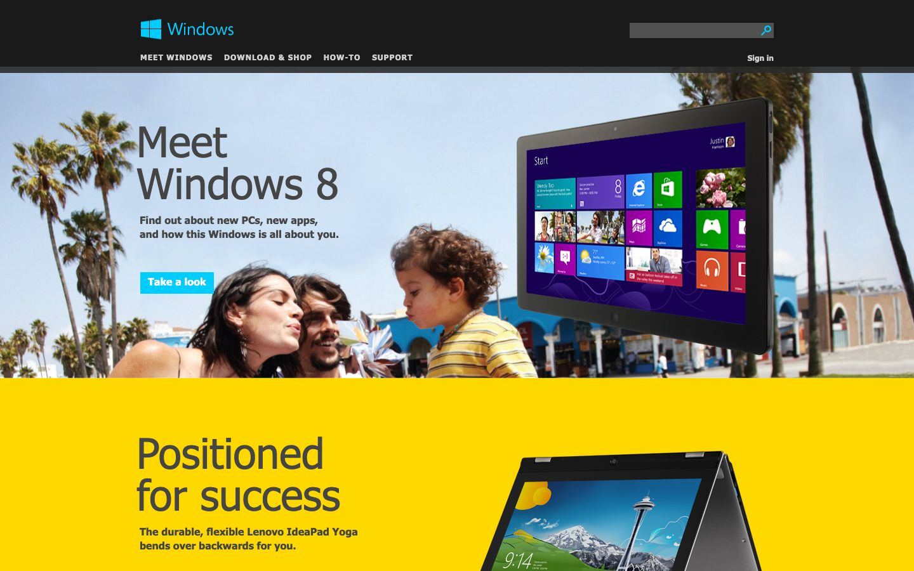

References / Website / 393
Windows website, 2013
The Windows 8 consumer site: a black header, a photo hero, and a full-width yellow band with large dark type.
- Source
- windows.microsoft.com, Windows home page (archived copy)
- Creator
- Microsoft
- Made
- 2013
- Style
- Flat design (agent-proposed, not yet reviewed by a person)
- Moods
- Bright, friendly, commercial
- Evidence
- Captured with
tools/capture.mjs(headless Chrome, 1440 × 900) on 28 September 2026 from the Wayback Machine copy of 1 April 2013, and inspected. The screenshot shows the first viewport; the measurement covers up to four screens. Nothing covers the page. Segoe UI is not installed on the capture machine, so text that the archive did not serve as a web font renders in a fallback sans-serif. - Reviewed
- Rights
- Third-party work, stored with credit for commentary. License: unverified. Rights policy
Observed
- A black header holds the cyan Windows logo, uppercase white navigation, and a dark gray search field.
- A photograph of a family on a beach fills the hero, with a tablet showing the Windows 8 Start screen tiles. The headline “Meet Windows 8” is large dark gray type; a square cyan “Take a look” button sits below.
- A full-width solid yellow band follows, with the headline “Positioned for success” in large dark gray type and a photo of a laptop.
Why it belongs
Measured: 39% of screenshot pixels are saturated, in 7 hue groups (partly from the photograph); no radius, shadow, or gradient. Large headings measure weight 600, so the capture fails the heading-weight range; the lower screens were measured but are not in the screenshot.
Borrow
Alternate photo bands with solid color bands of the same height, and keep the same headline treatment on both.
Measured
Machine-extracted by tools/extract-traits.js on . Full measurement.
- Type families
- Segoe UI (100%)
- Type scale ratio
- 1.21
- Median radius
- 0 px
- Mean chroma
- 0.25
- Palette
- #1a1a1a 23%
- #ffffff 15%
- #ff1769 13%
- #ffd800 13%
- #8e8e8e 11%
- #ececef 10%
- #454545 7%
- #2a2a2a 6%

